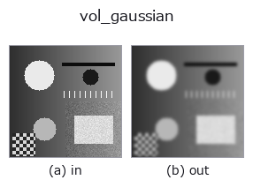

3d op• Datenarten: volume → volume
• Aufruf: fullseye.apply(img, "vol_gaussian", a=0.5, b=0.5) (das 2-D-Modell ist ein Bild plus zwei skalare Regler a,b∈[0,1])

*Die Abbildung ist die tatsächliche Ausgabe auf einer synthetischen 128×128-Eingabe. Links Eingabe, rechts Ausgabe. Punktwolken als Draufsicht-Streudiagramm (Helligkeit = z), 1-D-Reihen als Linie, Volumen als Maximum-Projektion entlang z, Videos als mittleres Bild, komplexe Bilder als Betrag; Rückgabewerte, die kein Bild ergeben, werden als Werte gezeigt.*
Regler a durchfahren (0,1 / 0,5 / 0,9, der andere Regler auf Standard):
▸ vol_gaussian: Regler a durchfahren (Doku-Website)
Regler b durchfahren (0,1 / 0,5 / 0,9, der andere Regler auf Standard):
▸ vol_gaussian: Regler b durchfahren (Doku-Website)
Stufen (die vorangehenden Ops → dieser Op, von links nach rechts):
▸ vol_gaussian: Stufen (Doku-Website)
Auf anderen Bildern (synthetische Szene / Foto / Münzen. Obere Reihe: Eingaben, untere Reihe: deren Ausgaben. Regler auf Standard):
▸ vol_gaussian: andere Eingaben (Doku-Website)
Bewegung (GIF: Bilder / Ansichten / Schnitte nacheinander. Die stehende Abbildung ist die vollständige; das GIF ist ergänzend):
Isotrope Gauß-Glättung eines 3D-Volumens. Es ist kein entsprechender HALCON-Operator angegeben.
a variiert die Standardabweichung σ über 0.3〜3.0 (0.3+2.7a). b wählt die Randbehandlung: b <= 0.5 ergibt reflect (Randpixel werden dupliziert und gespiegelt; Standard von scipy und das Verhalten bis 2026-09-17), danach nearest / constant (mit 0 auffüllen) / wrap (von der Gegenseite herumwickeln). ★Bei Fenster 3 stimmen reflect und nearest grundsätzlich überein (der Überhang beträgt 1 Pixel, die duplizierte Quelle ist also dieselbe) - bewegt sich das Ergebnis trotz geänderter Randbehandlung nicht, zuerst die Fenstergröße verdächtigen (bei Fenster 9 unterscheiden sich alle 3 Varianten). scipy.ndimage ist dimensionsunabhängig (N-D), daher wird genau dieselbe Formel wie beim 2-D-_gaussian unverändert auf 3 Achsen angewendet (CT/MRI, Tiefenstapel usw.).
• Leitfaden zur Familie gallery2d_physics_alife_3d
• Katalog der Beispieldaten (Download-URLs / Lizenzen) — 2-D nutzt skimage.data (BSD/Public Domain) plus synthetische Bilder, 3-D nennt Download-URLs echter Datenquellen (Stanford, PDS, …).
• Herkunft und Literatur der Operatoren — die Quellen der Forschung/Verfahren, auf denen diese Operatorfamilie beruht.
• Der kanonische Algorithmus (Autor, Jahr) und seine Anwendungen stehen im Familienleitfaden oben.
Das Programm unten ist nachweislich lauffähig (gleiche Eingabe wie die Abbildung). In der Studio-Hilfe wird dieser Block zu Schaltflächen, die es sofort laden und ausführen.
img_to_volume 0.50 0.50 vol_gaussian 0.50 0.50
▸ Diese Pipeline laden · Laden & ausführen
• gallery2d_physics_alife_3d — py -3.11 examples/gallery2d_physics_alife_3d.py
• poc_am_thermal_to_ct — py -3.11 examples/poc_am_thermal_to_ct.py
volume als Eingabe)identity · vol_median · vol_erode · vol_dilate · vol_threshold · vol_reg_dilate · vol_reg_erode · vol_dilation_ball
3d)vol_median · vol_erode · vol_dilate · vol_threshold · vol_reg_dilate · vol_reg_erode · vol_dilation_ball · vol_erosion_ball
*Provenance: ops.py — 2D Operator-Registry. Diese Notiz wird von tools/opdocs.py md erzeugt (nicht von Hand bearbeiten).*
© 2026 Kazufumi Furuse — Fullseye operator documentation. Licensed under Apache-2.0.